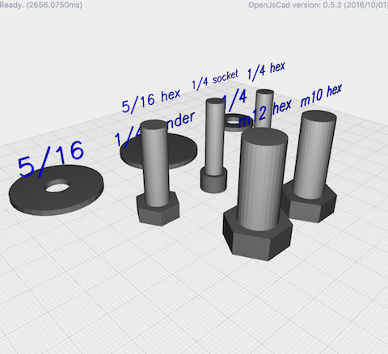
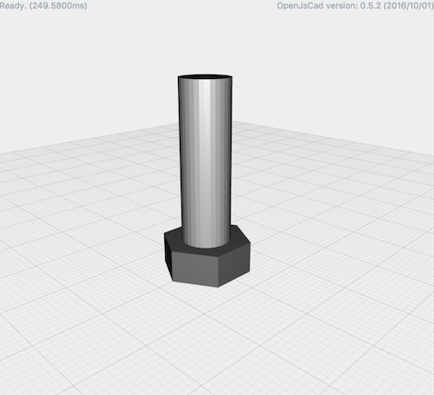

jscad-hardware

This is a collection of jscad parts that model a common Imperial and Metric bolts and washers. These models use the jscad-utils library and return jscad-utils group objects.
Installation
Install jscad-hardware using NPM:
npm install --save jscad-hardware
Basic usage
To use the utilities, you need to include the jscad-hardware.jscad.
include('node_modules/jscad-utils/jscad-utils.jscad');
include('node_modules/jscad-hardware/jscad-hardware.jscad');
main() {
util.init(CSG);
var BPlus = RaspberryPi.BPlus();
return BPlus.combine();
}
Yeoman Generator
You can use the yeoman jscad generator which will create a project that uses this library.
Once you create your project, install jscad-hardware, and run gulp. Dragging the dist directory into http://openjscad.org/ will include this library.
Modify your main.jscad file to return a RaspberryPi object.
function main() {
util.init(CSG);
var bolt = Hardware.Bolt(
util.inch(1),
ImperialBolts['5/16 hex'],
'close'
)
return bolt.combine('head,thread');
}
// include:js
// endinject
